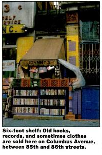

Not much of a photo, but it was all I could find. This was Johnny’s – a literal hole in the wall just off 86th Street on Columbus Avenue. I have no idea how he managed to stay open and sane, but he was there for at least several years. Occasionally you could find an interesting LP there, but the book selection was crappy. He made his living mostly off of selling old issues of Penthouse.